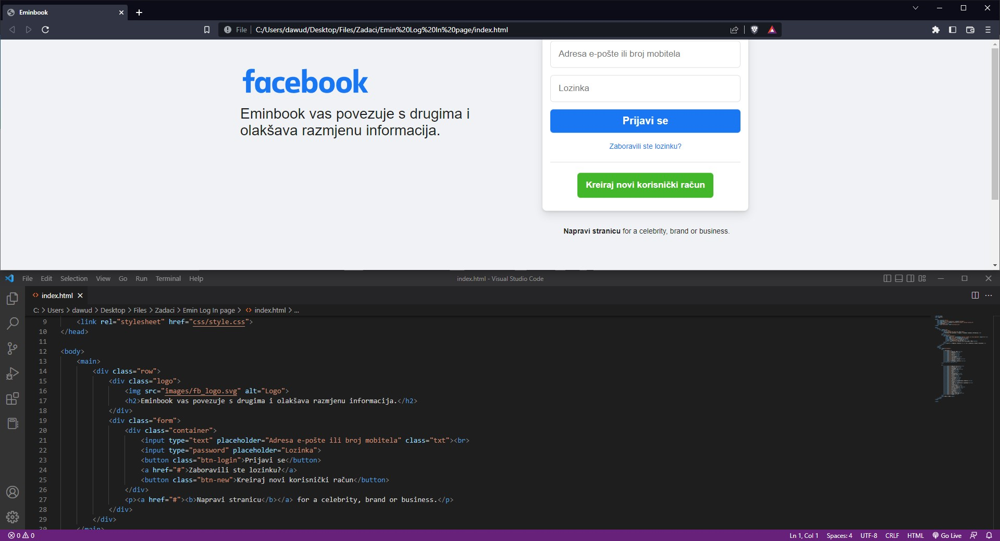
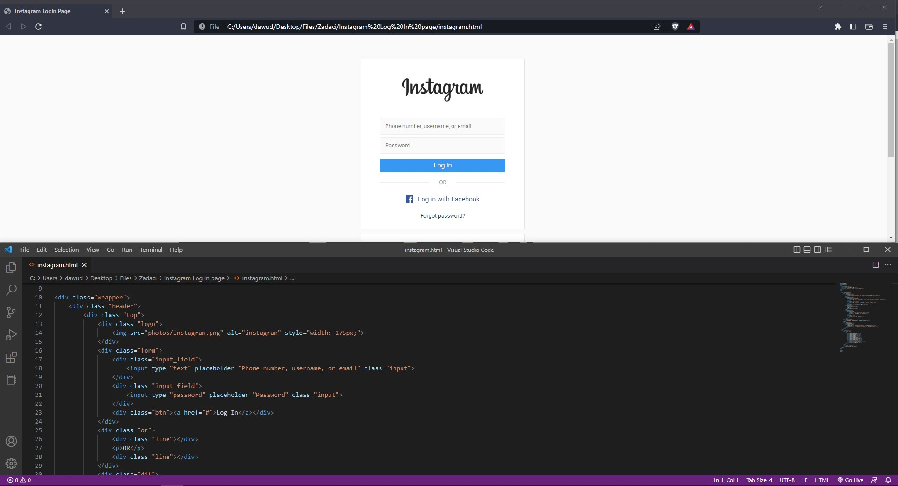

ABOUT ME
Zovem se Dauvd Hondo studnet sam Prirodno-matematičkog fakulteta u Sarajevu.
Sa programiranjem sam se susreo u 7. razredu dok sam još živio u Jablanici u OŠ "Suljo Čilić" Jablanica, počeo sam sa programiranjem u QBasicu.
Završivši 7. razred odselio sam u glavni grad Sarajevo gdje sam nastavio obrazovanje u OŠ "Avdo Smajlović", potom upisao Gazi-Husrev begovu medresu.
U medresi se nisam baš mogao toliko usavršavati u polju IT-a pa sam upisivao razne kurseve kao što su HTML&CSS, JavaSrcript, Servisiranje računara Software itd.
Tokom medrese pokušavao sam što više se baviti programiranjem, u 3. razredu srednje škole osvojio sam prvo mjesto na Međunarodnom izazovu iz informatike, „Hour of Code“
- Name: Davud Hondo
- Age: 20
- Email: dawudhondo7@gmail.com
Takmičenje me je poguralo da još više radim i još se više zanimam za programiranje. Na takmičenju se tražilo poznavanje programa Python. Takmičenje.
Poslije medrese upisao sam Prirodno-matematički fakultet i inšallah završit ću ga. :)
MATURSKI RAD
BRDSKI BICIKLIZAM
Naziv "brdski biciklizam" (terenski biciklizam) odnosi se na svaku vožnju, naročito dizajniranim terenskim biciklom (brdski bicikl, mountain bike) izvan izgrađenih prometnih pravaca. To se najčešće odnosi na brdske i šumske puteljke, ali i na urbana područja gdje god se zahtijeva vještina terenske vožnje (npr. niz stepenice, u parkovima). Popularnost ove relativno mlade grane biciklizma, kako u rekreativnom, tako i u takmičarskom smislu, u neprestanom je porastu, a sam brdski bicikl, zbog svoje robusnosti, udobnosti i praktičnog dizajna, sve više iz svakodnevne upotrebe istiskuje druge vrste bicikala
Čak štaviše, velika većina korisnika uopće ne koristi brdski bicikl kao sportski rekvizit nego isključivo kao prijevozno sredstvo, ponajviše zbog lošeg stanja biciklističke infrastrukture u urbanim sredinama po kojoj se primjereno kretati terenskim, a ne gradskim biciklom.
- Ime: Davud Hondo
- Projekat: Brdski biciklizam
- Mentor: Omer Dervišević
- Ime škole: Gazi-Husrev begova medresa
- Site: www.medresasa.edu.ba
- Adresa: Sarači 49 71 000 Sarajevo, Bosna i Hercegovina
SKILS
95%
HTML5
90%
CSS
55%
JS
70%
PYTHON
65%
C++
60%
UNITY
| # | Education | School | Learning | City |
|---|---|---|---|---|
| 2015 | Završavam 7. razred | Osnovna škola Suljo Čilić | QBasic | Jablanica |
| 2016-2018 | Završavanje osnovne škole | Osnovna škola Avdo Smajlović | C++ | Sarajevo |
| 2018-2021 | Završavanje srednje škole | Gazi-Husrev begova medresa | Python, HTML, CSS, JS, Unity | Sarajevo |
| 2021- | Upisivanje fakulteta | Prirodno-matematički fakultet | Python, HTML, CSS | Sarajevo |
PROJEKTI
PRVI PROJEKAT
Jedne večeri sam pričao sa svojim prijateljem koji radi u jednoj IT firmi i on je odlučio da mi bude mentor i tako mi je zadao prve projekte.
Moj prvi projekat sa njim je bio da napravim Facebook login page samostalno. Iskreno sa velikom zabavom sam to radio.
DRUGI PROJEKAT
Nakon što sam zadovoljio njegova očekivanja zadao mi je drugi projekat također Log In page al ovog puta to je bio Instagram Log In.
Ubrzo sam završio i taj projekat naravno izazov je bio što manje kopirat i vise se bazirat da se samostalno odradi i pogodi i padding i margin.
BLOGOVI
1. 7 Sneaky Ways Hackers Can Get Your Facebook Password
- Suspicious Emails
- Phishing
- Fake Facebook Buttons
- Password Spraying
- Plain Password Grabbing
- Keylogging
- Unsecured Networks
- Facebook Security in a Nutshell
Facebook can be a great way to stay in contact with friends and family. But it can also make you more vulnerable. Your account likely has a ton of personal data and connections that could benefit a hacker. The more you understand about how a hacker can access your password, the savvier you will be at keeping it safe. Here are seven sneaky ways hackers can access your password and what you can do to stop them.
Suspicious Emails
You have probably heard many times by now not to open suspicious emails. This is still true today. But fake emails have become much more sophisticated than in the past. Fake emails might appear to be from Facebook and have all the formatting and logos you expect in a legitimate email. It can be very difficult to determine if an email is fake. There are a multitude of ways a hacker can use a suspicious email to gain access to your Facebook account. The best way to avoid this is to delete the email and do not click on anything in the email. It is best to not even open suspicious emails. If Facebook has to reach you, they can do so from your Facebook account. If you get an email from “Facebook”, instead of opening the email, log into your account to see if you have a notification there. Do not trust any emails that ask for account information, request money, or threaten to suspend your account.
Phishing
The purpose of many fake emails is phishing. Phishing is when someone asks for personal information that they can use to gain access to your account. A common way to phish is to trick someone to sign in on a fake site. Some hackers will go through the trouble of creating a fake website that looks the same as Facebook. But, you can avoid this trap. It is always best to go to Facebook rather than click on a link. If you do use a link, carefully read the email address. Does it look correct, or is Facebook misspelled? Finally, check for the secure icon in the web address before signing in.
Fake Facebook Buttons
You might know not to trust links, but don’t forget that “like” and “share” buttons act like links. Clicking on one of these buttons on a fake site might lead you to a fake login page designed to steal your information. To avoid this, sign in to your Facebook account from a new tab in your browser. Your browser will keep you logged in on other tabs. Now, any likes or shares will go directly to Facebook. If you still get a prompt to login, it's a good indicator that the button was fake.
Password Spraying
Coming up with a password is hard. It can be tempting to use something like “123456789”. Of course, that is a bad idea; it is too easy to guess. But many people do use similar easy passwords. Because of this, many hackers employ password spraying. This is when they guess a password by using the most common passwords. It is hard to remember a random alphanumeric sequence. So, more people use words, which limits the number of potential passwords available. When creating a password, it is best to use a unique phrase, replace some of the letters with numbers, and vary the capitalization. And definitely avoid any variation of the word “password”, including pa$$word123.
Plain Password Grabbing
Once you come up with a good password, make sure you only use it for your Facebook account. If you use the same password everywhere, you leave yourself vulnerable to Plain Password Grabbing. This is when a hacker attacks a more vulnerable and less secure site. Some sites do not properly encrypt passwords. In that case, a hacker can then use the email and password saved in the database to try to access other sites like Facebook. If you have a lot of accounts that require passwords, consider using a password manager. Often, they will generate strong passwords for you too.
Keylogging
Keylogging is a more advanced hacking technique. It requires installing a program on your device to track everything that you type. This can give hackers far more information than just your Facebook login information. They could even get credit card information using this method. But, because a hacker needs to install a keylogging program on your device, it is a little easier to protect yourself against this sort of attack. Generally, hackers hide these programs in other software. To stay safe, do not download anything from an untrusted source. Your computer’s security software can detect these programs, but you might want to get anti-malware software for your smartphone. Make sure to keep your security software up to date too.
Unsecured Networks
Even if you have the best passwords, and are using the most secure computer, it won’t help if the network you are using is not secure. Public Wi-Fi is often unsecured. Unsecure networks allow hackers to snoop through all the data that you send and received from webpages while on that network. Instead of using free Wi-Fi to access Facebook on the go, sign in using mobile data. It will ensure that your data is more secure. Or consider getting a virtual private network (VPN). Many VPN providers will encrypt your data, which will protect it even if you are connecting to the internet on an unsecured network.
Facebook Security in a Nutshell
Our growing dependence on the internet means that we need to be a little more careful online. All the security information out there can be a little overwhelming. But it all boils down to a couple of simple tips. Use unique passwords for all your accounts. Do not click on any links that you do not trust (even if it looks like they are from Facebook). Do not download anything unless you are certain if it is safe. Do not enter sensitive information on public computers or across public Wi-Fi. If in doubt, error on the side of caution.
2. The Pioneers of Computer Programming
- Babbage and Lovelace
- Herman Hollerith
- The War Trio: Alan Turing, Konrad Zuse and John von Neumann
- Grace Hopper
- Looking Back at Computing History
Unlike some inventions—like the airplane (Wright Brothers) and telephone (Alexander Graham Bell)—the creation of computer programs isn’t tied to any single name in history. Instead, it was a halting, stop and go progress that eventually yielded what we think of as computer programming today—the ability to write instructions for a machine in near-English language. Here we'll look at some of the pioneers in this field. (For more history, check out our tutorial on The History of the Internet.)
Babbage and Lovelace
Although mathematics and algorithms are vital to computer programming, we will start with the duo that is most widely credited for both the concept of computer programs and the creation of the first one. Charles Babbage is considered to be the father of the programmed computer. As a mathematician, he understood how all calculations were made up of smaller parts that could be mechanized. To do this, the machine would need an input device, a processor, a control unit and an output device. Babbage conceptualized such a machine and dubbed it the Analytical Engine. The conceptual Analytical Engine became even more important in computing history when Babbage’s friend, Augusta Ada King (formerly Byron and later to be Lovelace) wrote the first computer program for it. The algorithm-based program she wrote for the Analytical Engine was intended to calculate Bernoulli numbers and would have worked if the machine had been built. Amazingly, this gem was tucked away in the notes she wrote for a translation she did of an Italian mathematician’s work. So it is that the eventual Countess of Lovelace is widely heralded as the world’s first computer programmer. (Read also: Ada Lovelace, Enchantress of Numbers.)
Herman Hollerith
The first practical step toward a programmed computer was taken by Herman Hollerith. Hollerith, and the Tabulating Machine Company he founded in 1896, lie at a nexus in computing history. Hollerith’s punch-card machines were definitely a step in the direction of a programmed and automated computer, but they also marked the birth of data processing. As if that major contribution weren’t enough, his company also became part of the iconic IBM in the 1920s. As far as programming, however, the Hollerith Machines provided a medium by which programming (laborious and slow programming) could take place.
The War Trio: Alan Turing, Konrad Zuse and John von Neumann
It sounds like the start of a joke, but a German, a Brit and a Hungarian greatly advanced the field of computer programing, both in theory and in practice. The Brit, Alan Turing, came up with the Universal Turing Machine, a conceptual machine that could be programmed and reprogrammed to do different tasks. During the war he also designed many single-purpose computers for cracking codes. The Hungarian, John von Neumann, added a description of the architecture that would be needed to create a stored-program computer, giving scientists and academics a to-do list. Independently of von Neumann and Turing, Konrad Zuse built the first programmable computer using a programming language of his own devising called Plankalkul, which was written in binary. The potential of his computers was largely overlooked by the German military, and Zuse’s prominence in the history of computing has suffered for this reason. The fact that his pioneering work was done in Nazi-era Germany also didn't help his popularity.
Grace Hopper
Captain Grace Hopper is the last stop in the story of computer programming. Hopper ended her career in the Navy with the rank of admiral, but she is best remembered for her work in computer programming. Hopper created both the first compiler, which allowed programmers to use near-English instead of machine code, freeing them up from having to convert every command into lines of binary code. She also pioneered the concept of a library of subroutines that different programs could call upon, rather than coding these again and again with each program. After Hopper, computer programming became a story of higher-level languages that allowed computer programmers to focus more on creating new applications than on learning and composing in machine code.

Looking Back at Computing History
The evolution of computer programming was uneven at best. Babbage and Lovelace came out with a strong concept in the early 1800s, but the next significant step wasn’t taken until Hollerith came up with a consistent medium in the 1880s. During WWII, several major steps occurred simultaneously, with the compiler and the birth of modern programming a scant decade later (1952). Since then, computers and computer programming have progressed at breakneck speeds with the range of applications far outstripping what even the most optimistic pioneer may have envisioned.
| Year | Events | Name |
|---|---|---|
| 200BC - 70BC | First known coputer | The Antikythera Mechanism |
| 1770 | The Writer - Automaton | Pierre Jaquet - Droz |
| 1804 | The First Binary System | The Jacquard Loom punch card system |
| 1843 | First computer programmer | Ada Lovelace |
| 1936 | Alan Turing writes "On... Entcheidungsproblem | Invents computer science |
| 1941 | Programs the first electrical computer | Konrad Zuse |
| 1945 | First full time paid computer programmers | Kay McNulty, Betty Jennins, ... |
| 1952 | First Computer Programming Language | Grace Murray Hopper |
| 1971 | First computer virus The Creeper | Bob Thomas |
| 1972 | First anti-virus software The Reaper | Ray Tomlinson |